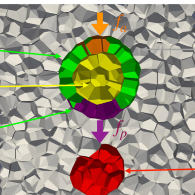
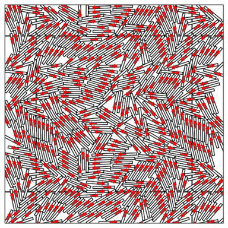
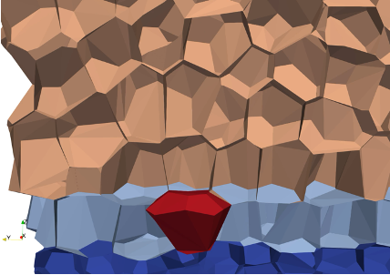
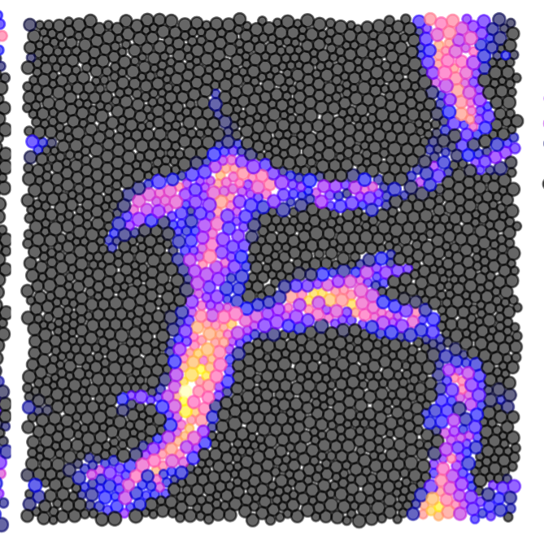
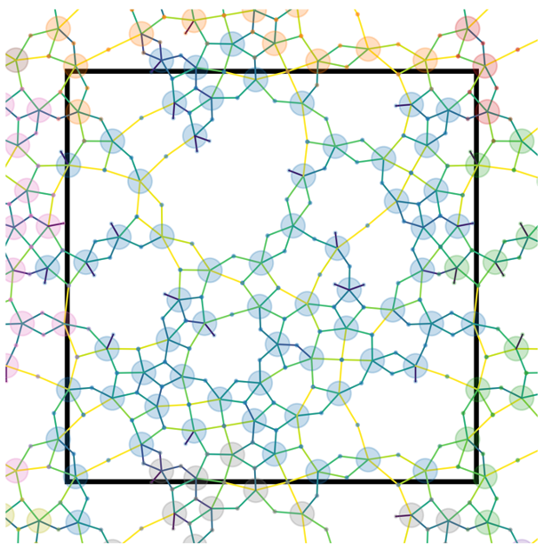
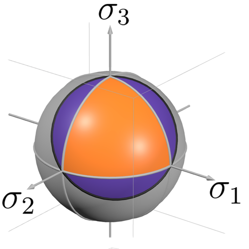
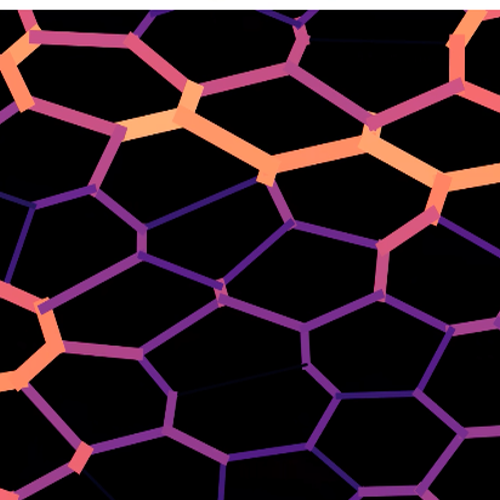

Research
Research in the Manning group follows two interconnected thrusts: collective behavior in biological tissues and deformation in disordered solids. See below for details on each sub-topic.

Organogenesis during development
- Dynamic forces generated by tissue drag
- Interfering with myosin via an optically released drug
Personnel: Rajendra Singh Negi, Raj Kumar Manna, Jeff Amack Lab (SUNY Upstate), Heidi Hehnly Lab (SU)

Predicting dissipation and flow in non-Hamiltonian active disordered solids
- Systems with pressure gradients
- Active rods that cannot be mapped to a Hamiltonian system
Personnel: Tyler Hain, Julia Giannini, Adil Ghaznavi, Edan Lerner (U. Amsterdam)

Placode formation and homeostasis in stratified epithelia
- Placode formation
- Homeostasis and delamination
Personnel: Elizabeth Lawson-Keister, Somiealo Azote, Sara Wickstrom Lab (Muenster), Carien Niessen Lab (Cologne)

Yielding in glassy and active matter
- Is the yielding transition brittle in dense active matter?
- Structural elasto-plastic models for yielding
- Spatio-temporal dynamics of avalanches in particle-based and elasto-plastic models
- Structural indicators as a function of packing fraction
Personnel: Adil Ghaznavi, Cam Dennis, David Richard

Emergent mechanics in tissues composed of stellate mesenchymal cells
- Developing new models for tissues with star-like cell shapes and large gaps between cells
- A new, bioinspired type of active metamaterial: fluid under tension
Personnel: Alex Grigas, Ale Mongera (UCL)

Characterizing and designing second-order rigid materials
- Designing mechanical metamaterials by sculpting the critical manifold in fiber networks
- Parameterizing the critical manifold of vertex models for biological tissues
- Making real mechanical networks with torsional springs
Personnel: Tyler Hain, Kelly Aspinwall, Chris Santangelo (SU)

Physical learning in biological tissues
- Can we use physical learning to fluidize a tissue?
- Comparing proposed mechanisms for germband extension in Drosophila using a physical learning framework
- Cell differentiation patterning via surface receptors (Notch-Delta)
Personnel: Sadjad Arzash, Kelly Aspinwall, Andrea Liu (UPenn)